什么是留青竹刻
留青竹刻是一种中国传统的雕刻艺术，主要使用竹子表面的一层青皮进行雕刻，铲去图案以外的竹青，露出竹肌作为背景，形成图底变化的艺术效果。
抖音视频中国非物质文化遗产-常州留青竹刻
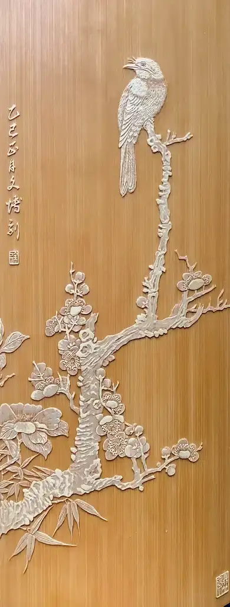
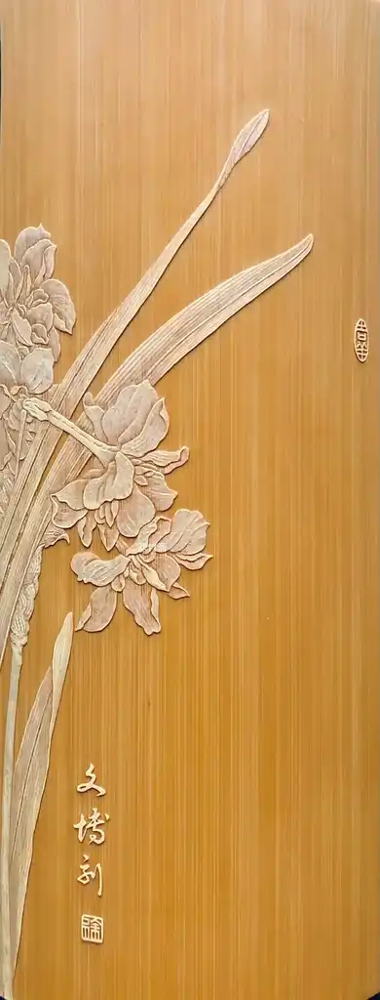
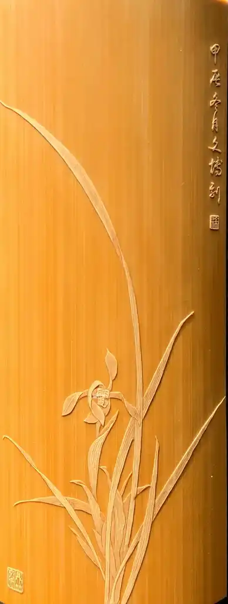
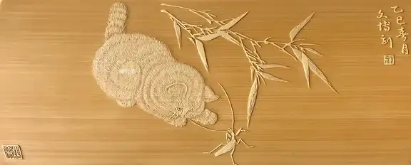
欢迎新朋友的加入，我们是一个传播非遗技艺的专业直播间，主要分享的是常州留青竹刻方面的专业知识和技法。徐老师建群的目的，是为了大家能在融洽的氛围中了解竹刻、爱上竹刻，更希望大家能够在互相鼓励、友好交流中互相促进。
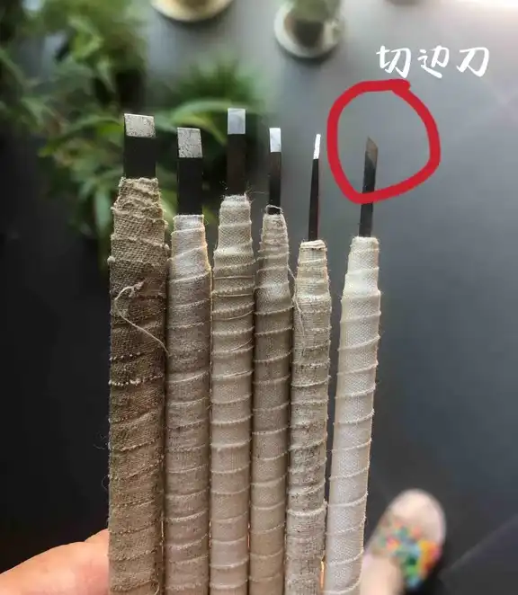
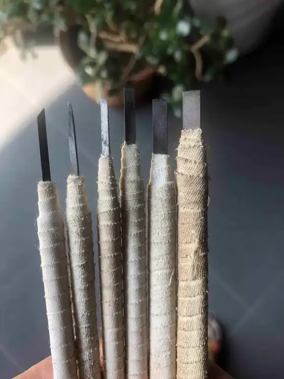
刀具由白钢条制作而成，白钢钢条长统一20厘米，厚统一2毫米比如1毫米✖️2毫米✖️20厘米，2毫米✖️2毫米✖️20厘米，以此类推可以仿照上面的刀具自己制作刀具，做雕刻必须要学会自己做刀这一步很多人都来问我买刀，我们实在来不及做刀，还是大家到网上买白钢刀自己动手做吧，学会磨刀这是雕刻手艺人必备的技能。做一套专业的留青刀具还是要花费点时间的，但一套刀具可以玩一辈子呢，想想也划算的。授人以鱼，不如授人以渔
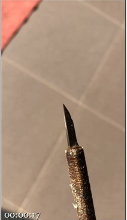
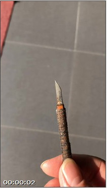
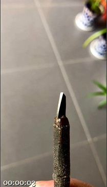
圆刀是用来分筠的，准备大中、小三种，平刀用来铲底、清底的，也准备大、中、小三种。我们的常用刀也就是切刀，铲刀，圆刀等。分筠是指在竹皮上分出画面的层次、虚实，深浅，相当于工笔画的渲染着色...
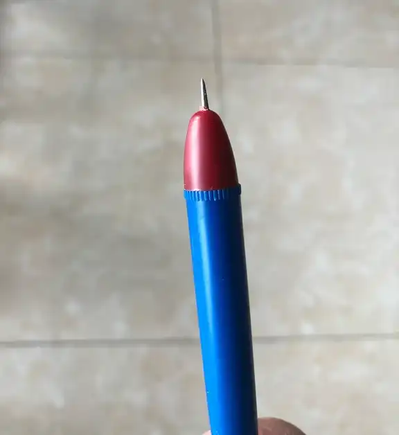
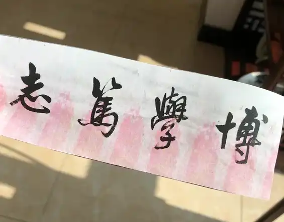
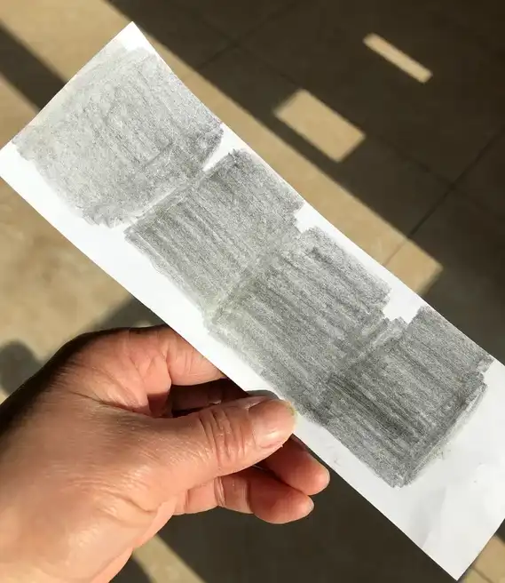
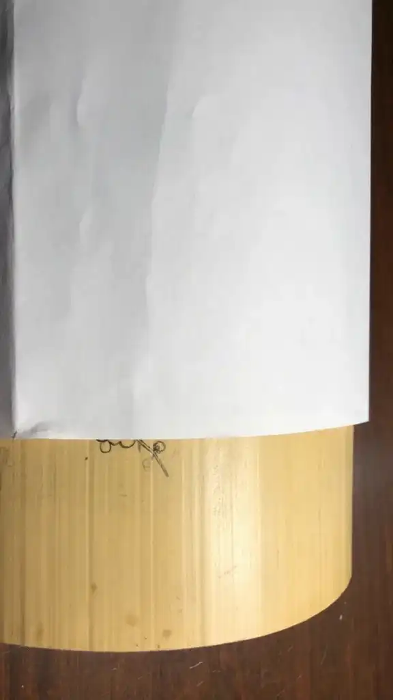
最简单的拓印方法，用2B铅笔在稿件反面涂上铅，用透明胶带纸粘住，正面用铁笔描一遍，再用细铅笔对着画稿进行修改，以保准确无误。
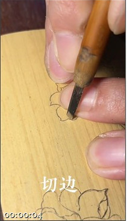
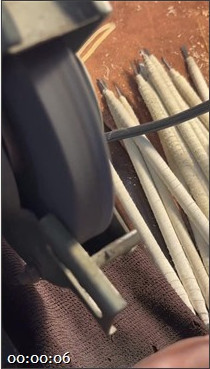
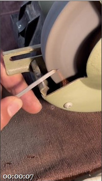
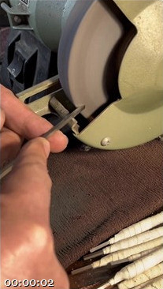
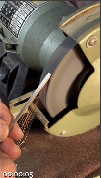
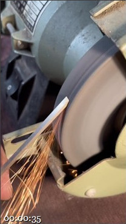
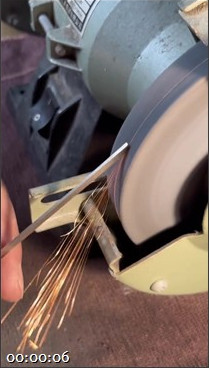
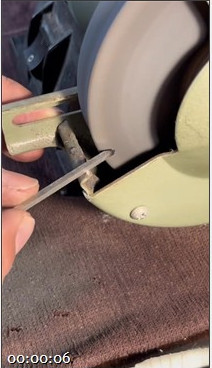
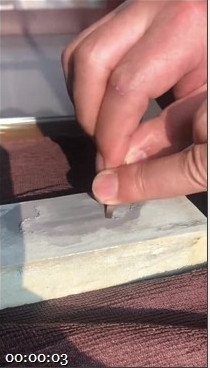
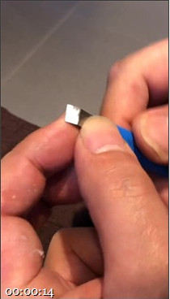
这是徐老师为大学里的学生制作一些刀具，所以王馆长用徐老师的手机拍了些视频，让大家借鉴一下。 砂轮机上磨一下刀的初步形状，然后再到细磨刀石上细磨。 机器上磨了粗坯后，再上油石上进行精磨，平刀平面一定平整光滑，铲刀刮刀一定要锋利，刀快才能更好的使用。 注意刀具不能是软的，可以适当加固一下，这样才能更好的发力。
徐老师是王馆长拉进直播间的，平时网络也是我在管理，他就是安安静静地创作，做雕刻手艺是个细致活，工作态度重要的很，把每一个细节做到极致，才能让作品更有亮点。
谢谢粉丝朋友们喜欢我们的视频，都是王馆长学着剪辑的视频，水平真不咋样，就是拍拍徐老师的工作日常。
取人之长，补己之短，这是老祖宗的智慧。竹友们，仁者见仁 ，智者见智啦！竹友们，喜欢我们直播间，大家可以一起玩留青！
朋友们想知道什么都可以在群说，一有空我都会回复的。平时我也要干活的，不会一直看手机，所以只要看到都会回复的。谢谢朋友们的支持和厚爱．感谢、感恩！[抱拳][抱拳]
我们只吸引，不打扰，只为真正喜欢留青技艺的朋友。尤其是在高科技的时代，如果不掌握好的专业技能，很快会被社会淘汰掉，所以我们既要有速度，也要有品质保证。
既有手作的温度，做出有灵魂的作品，又要提高速度与高科技媲美，才能吸引到更多的朋友。 有朋友喜欢留青想了解一下，可以关注一下我，徐老师很少管销售，一般都是我负责的，他只负责专研技艺，几个学生也是让他们好好认真练技能，只有手过硬才有更多的可能性。
我和徐老师都是从最底层通过努力一点一点积累提升起来的，所以特别理解手艺人的不容易。 我们直播间就是分享留青技艺，不卖货，谢谢大家的理解，大家都是因为技艺而走到一起的，如果有朋友也想定制作品，还是去王馆长账号里去看一看吧，抖店才挂的作品不多，做了直播王馆长忙了好多。 咱做直播没请团队，也不想做网红，最多也是传播一下技艺，让更多的人了解这门非遗技艺，为非遗传承做点实事，增加一点自己的影响力。做手艺赚的是辛苦钱，所以直播也只能两口子，没有成本，我是免费的小助理了。
上面是我们的抖音号，有什么需求可以联系我，我们线下是有实体店的，已经做了三十多年了，建有自己的私人艺术馆，欢迎朋友来喝茶赏竹！ 咱的口碑和信誉一直都是杠杠滴，在常州咱留青专业这块业务还是挺好的。品质好，价格优，能吃苦，有速度，还是得到了市场的认可，有一定的优势。
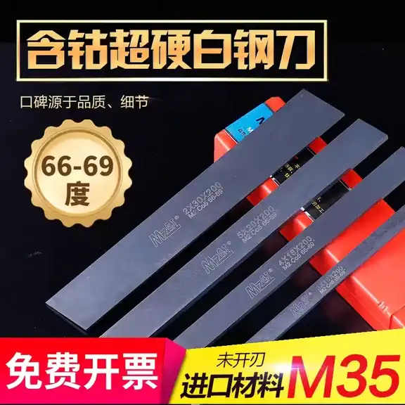
任何一样技艺都是有技巧和方的，认清直播间找对适合自己的方法和手法，对我们的制作是有极大好处的！一但形成错误的方法，会让自己固步自封。
鼓励竹友们自己动手做刀具，因为刀用着是很容易钝的，钝刀做起来不利落。网上的刀具都是义乌批发过来的，并不适合我们的留青竹刻。 如果基本功练习的还不够好，尽量少尝试画面，ho不住会影响自信的，心态差一点点的会有问题。[捂脸]
网上的刀具我们学生也买过，精准评价不好用，用过自己做的刀具后，感受过自己做刀的好处，你们就看不上买的刀具啦。
分享完毕，有啥都可以在群里留言！[握手]
君子爱财 ，取之有道。来到抖音平台就是为了传播非遗技艺，尽传𠄘人的一份绵薄之力，不会借着非遗的名头去干些什么。
如果朋友们想买型材，可以试试这家，我们线下做体验活动，买过好多家的型材，觉得这家还比较好
当然，我们跟他们没啥关系，只是买了用过
如果群里有人加你，向你卖刀卖竹材，您要慎重考虑，因为他跟我们没有任何的关系，我们鼓励大家自己学做刀具，毕竟我们每天都要用刀，每天都要磨刀，不懂刀具的诀窍，对以后的制作不利，纯手工制作刀具是非常重要的！